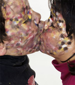

View photographs

In the series Who Am I? What Am I? Where Am I? , I invited artists to collaborate on a photo portrait of a child. My initial idea was to make a painting on the child’s face but many artists had ideas that related more closely to their own practices. In the ensuing photo, I tried to follow their ideas as closely as possible. These works became three-way collaborations based on play. While, for children, play is a way to learn, perhaps art offers adults a chance to play. In turn, artists are identified by their work. In these portraits, not only did the children get a different glimpse of themselves, but also many artists came away with a renewed sense of play. The project comprises a social and artistic archive that spans twelve years and the work of over eighty artists. Some of the participating artists include Ei Arakawa, John Baldessari, Monica Bonvicini, Lisa Davis, Maria Eichhorn, Coco Fusco, Rainer Ganahl, Dan Graham, Lyle Ashton Harris, Mary Heilmann, Joan Jonas, Mike Kelley, Jutta Koether, Harmony Korine, Louise Lawler, Allan McCollum, Josiah McElheny, John Miller, Marilyn Minter, Matt Mullican, Vic Muniz, Tony Oursler, Karin Sander, Jim Shaw, James Siena, Amy Sillman, Laurie Simmons, Kiki Smith, Michael Smith, Haim Steinbach, Fred Tomaselli, Lawrence Weiner and Christopher Williams. In 2009 Hatje Cantz published a book of the full series with texts by Nic Guagnini and John Miller